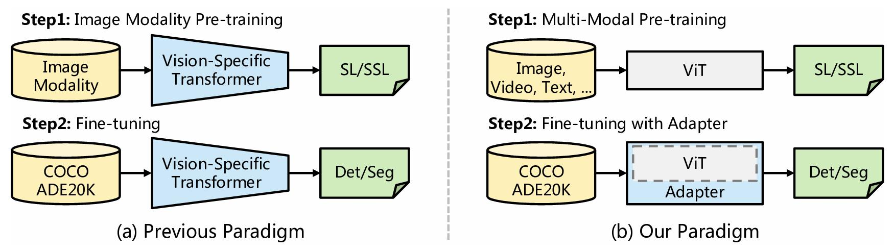
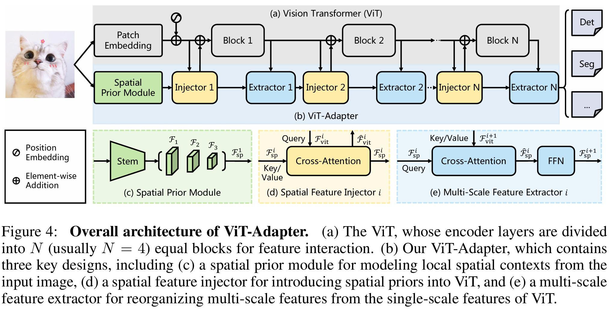
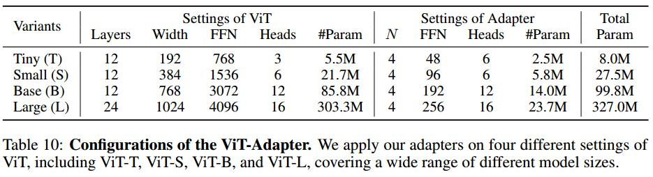
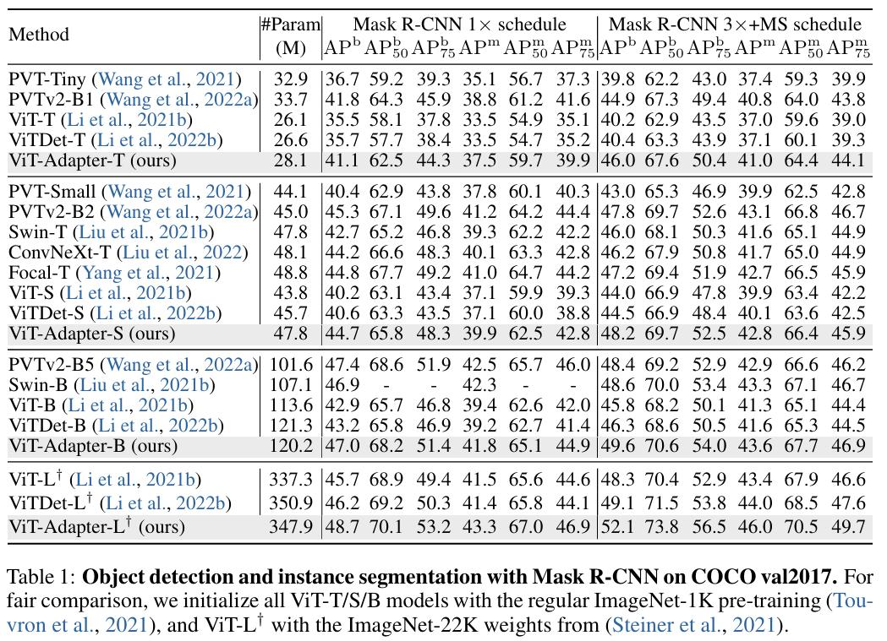
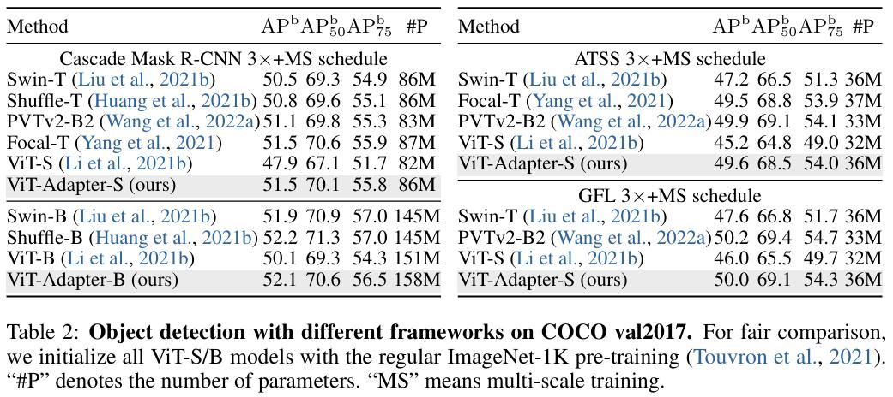
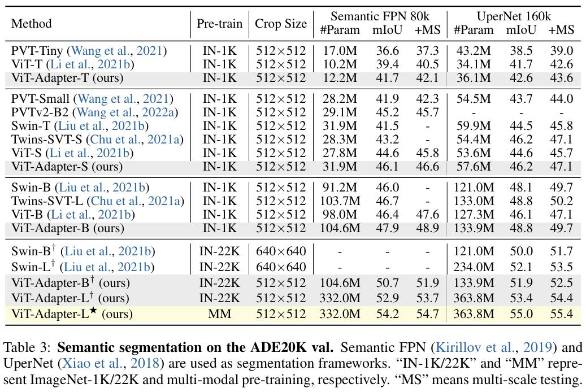

论文笔记——ViT Adapter¶
综述¶
会议时间：ICLR 2023
主要思想¶
Transformer在计算机视觉领域取得了显著的成功，主要得益于transformer的动态建模能力（dynamic modeling capability）和注意力机制中长距离依赖（long-range dependence）的建模能力，同时普通的ViT可以使用大量多模态数据进行预训练（包括图像、文本和视频等等），通过利用大量并且多维度的数据进行预训练，可以显著提升模型学习丰富语义表示的能力。然而，普通的ViT在密集预测任务方面效果往往不是很理想，由于缺少图像相关的先验知识，因此会导致模型收敛慢，实际应用性能比较低。在后面的研究中，推出了一些特定于视觉的transformer网络（vision-specific，例如：Swin transformer、PVTv2），利用局部的空间操作来引入视觉特定的归纳偏置（vision-specific inductive biases），从而缓解transformer模型在视觉任务应用中缺少图像先验知识的问题，但是这些模型由于是视觉特定的模型，因此只能在图像数据上做预训练，无法在其他数据上做预训练，限制了数据源的格式。为了解决这一问题，本文受到NLP领域中adapters的启发，提出了一种视觉adapter结构，用于缩小密集预测任务中，普通ViT和视觉特定backbone之间的性能差异。
对于视觉ViT adapter，他是一种可以附加在普通ViT的模块，可以在不修改原始结构的情况下有效地将普通的ViT适用于下游的密集型预测任务，具体地来说，为了将视觉特定的归纳偏差引入到普通的ViT中，作者设计了三个模块，包括：①Spatial Prior Module：用于从图像中捕获局部的空间语义特征；②Spatial Feature Injector：用于将空间先验特征融入ViT特征中；③Multi-scale Feature Extractor：用于得到密集预测任务所需要的多尺度特征（将ViT特征融入空间先验特征中）。
如下图所示，与之前的范式相比（在大规模数据集上预训练，然后在其他任务上做微调），作者提出的范式更加灵活。之前的框架由于backbone是视觉特定的网络，因此只能用图像数据来做预训练；而在作者提出的框架中，backbone是一个通用的模型（例如普通的ViT），它不仅可以用图像来做预训练，还可以利用多模态数据进行预训练，而对于密集预测任务的迁移学习，只使用随机初始化的adapter来将图像相关的先验知识（归纳偏差）引入预训练的主干网络中，使模型可以适用于这些任务，通过这种方式，在密集预测任务中，仅使用ViT作为骨干网络，利用作者的框架可以实现与Swin等视觉特定的ViT算法相当的性能。

方法¶
模型主要分为两个部分，分别为普通的ViT网络和所提的ViT-Adapter模块，具体如下图所示：

对于ViT，首先将图像输入到patch embedding中，将图像分割成16\times16大小的不重叠patch，之后将这些特征投影成d维的token，之后将这些token加上位置编码。
对于ViT-adapter，首先将输入图像传入由CNN组成的空间先验模块中，得到三种分辨率的d维空间特征（\frac18、\frac1{16}、\frac1{32}），之后将这些特征沿空间方向拉直，并连接起来，作为特征交互的输入。具体地来说，给定交互次数N（通常为4），我们将ViT的transformer编码器平均分成N个block，每个block包括L/N个transformer模块，对于第i个块，首先通过空间注入器向其中注入空间先验特征，之后通过多尺度特征提取器从块的输出中提取多尺度层次特征。经过N次交互之后，得到高质量的多尺度特征，之后对特征进行拆分和重构，得到目标分辨率为\frac18、\frac1{16}、\frac1{32}的特征。最后，利用2\times2的转置卷积对\frac18尺度的特征图进行上采样，构建\frac14尺度的特征图。通过这种方式，会获得与ResNet相似分辨率的特征金字塔，可用于各种密集预测任务。
注：一共四种尺度特征，分别为\frac14、\frac18、\frac1{16}、\frac1{32}。
空间先验模块¶
相比于transformer结构，卷积神经网络具有更强的局部建模能力，可以帮助transformer更好地捕获局部的空间信息，受此启发，作者引入了由CNN构成的空间先验模块（SPM），和原ViT分支并行嵌入，可以对图像的局部空间上下文进行建模。
具体结构下图所示，参考resnet的标准卷积系统，Stem由三个卷积层和一个最大池化组成（第一个卷积层步幅为2，其他为1），之后依次使用步幅为2的3\times3卷积做下采样操作（通道数增加，并且减小特征图分辨率尺寸），将所得的特征传入1\times1的卷积，将特征图的通道数均转为D（跟FPN里的目的一样，得到同特征维数下的多尺度特征），最终会得到三种尺度的特征F_1,F_2,F_3，分辨率均为原图的\frac18,\frac1{16},\frac1{32}，之后将特征图沿空间拉直，得到空间特征F_{sp}^1\in R^{(\frac{HW}{8^2}+\frac{HW}{16^2}+\frac{HW}{32^2})\times D}。

特征交互模块¶
特征交互模块由两个模块构成，主要用于ViT特征和空间特征之间的特征交互。
空间特征注入器
该模块用于将空间先验特征注入到ViT特征中，将ViT特征F_{vit}作为查询query，空间特征F_{sp}作为键值对key-value：

这一操作本质上是用ViT特征查询空间特征中对自身有用的特征，相当于将具有局部空间信息的特征融入ViT特征中，做不同领域特征之间的融合。
多尺度特征提取器
在向ViT注入空间特征之后，将所得的\hat{F}^i_{vit}传入第i个transformer编码block，得到F^{i+1}_{vit}，之后使用交叉注意力和前馈神经网络提取多尺度特征，将空间特征F^i_{sp}作为查询query，ViT特征F^{i+1}_{vit}作为键值对key-value

这一操作本质上是用多尺度的空间特征查询ViT特征中对自身有用的特征，相当于将语义丰富的ViT特征融入多尺度空间特征中，让每个空间特征都具有丰富的语义信息，最终所得的特征既有多尺度表征的能力也有初始ViT丰富语义特征的优势。
模型规格¶

实验部分¶
同一框架下（Mask R-CNN）不同Backbone的比较
任务：目标检测和实例分割

不同框架下的比较
任务：目标检测

语义分割

总结¶
本工作主要针对普通ViT缺少视觉特定的归纳偏置问题做改进，设计了ViT-Adapter模块，利用交叉注意力，充分将CNN中局部空间建模的能力融入到ViT模型中，在保持原有ViT架构不变，即ViT语义特征不减弱的情况下，灵活地将图像相关的归纳偏置注入到ViT模型中，重构密集预测任务所需要的细粒度多尺度特征，最终实现下游任务良好的应用。
以上仅是笔者个人见解，若有问题，欢迎指正
注：初步完稿于2024年2月4日。